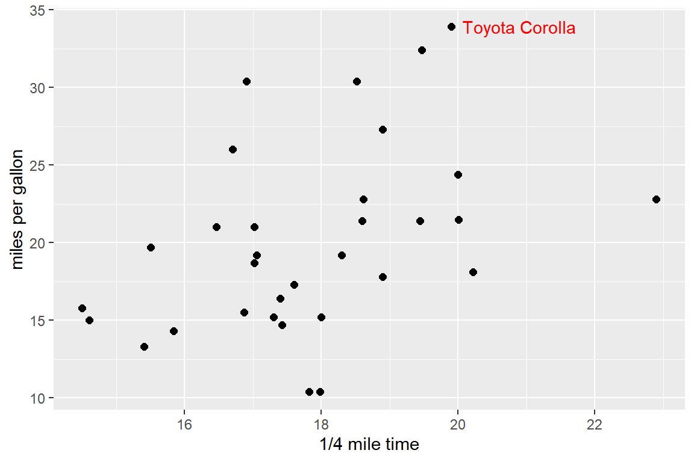
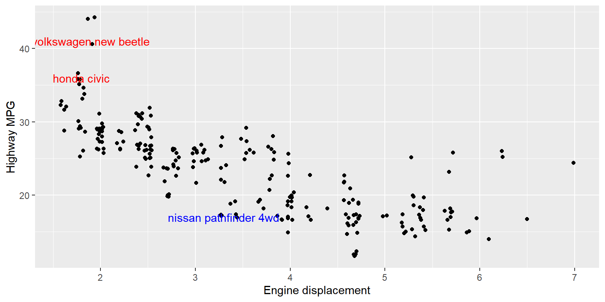
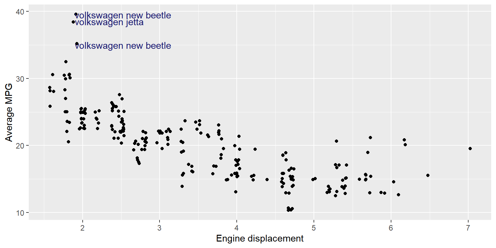
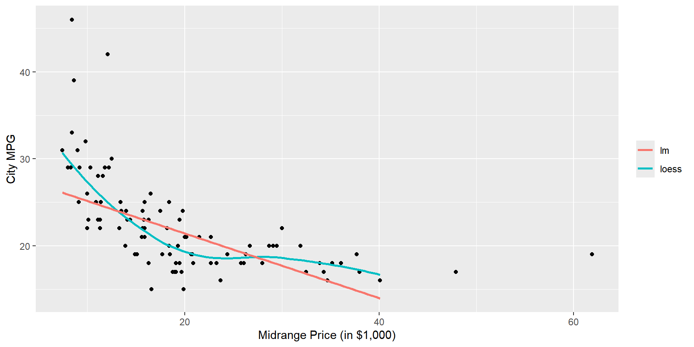

5 장 ggplot2에 의한 자료 시각화
자료의 시각화(Visualization)란 자료의 구조를 꿰뚫어 볼 수 있는 명쾌한 그래프를 이용하는 자료 분석방법을 의미한다. 잘 그려진 그래프는 자료의 모습을 있는 그대로 보여 주는 유일한 분석방법이며, 다른 어떠한 분석기법에 의한 결과보다도 더 많은 정보를 전달해 줄 수 있는 방법이기도 하다. 그림 5.1은 자료 시각화의 위력을 잘 보여주는 예로서 Cleveland (1993) 에 의한 놀라운 발견이다. 1930년대 초 미네소타 주의 농경학자들이 보리 종류에 따른 수확량의 차이를 알아보기 위한 경작 실험을 실시하였다. 6군데 경작지에 10종류 보리를 2년간 경작하였는데, Morris 지역만이 1932년의 수확량이 1931년의 수확량 보다 많다는 것을 알 수 있다. 6개 경작지가 모두 근처에 있다는 점을 고려해 보면 유독 Morris 지역에서만 다른 결과가 나왔다는 것이 상당히 의심스럽다고 할 수 있으며, 데이터가 바뀌었을 가능성을 생각해 볼 수 있는 상황이다.
그림 5.1: 보리 자료에 대한 다중 패널 점그림
자료 시각화에 특히 강점이 있는 R에는 몇 가지의 그래프 작성 시스템이 있다. 함수 plot() 등이 속해 있는
base graphics도 그 중 하나인데, 이들 그래프 작성 시스템 중 가장 효과적이고 여러 면에서 우수한 시스템이 바로 ggplot2라고 할 수 있다.
그래프 작성에 일관된 규칙이 있어서 복잡한 상황에서도 쉽게 확장이 가능하다는 것이 큰 장점 중 하나이다.
패키지 ggplot2도 core tidyverse에 속해있기 때문에 library(tidyverse)를 먼저 실행해 주면 사용할 수 있다.
5.1 ggplot2 시작하기
패키지 ggplot2에 있는 데이터 프레임 mpg의 변수 displ과 hwy의 관계를 산점도로 나타내보자.
변수 displ은 리터 단위의 배기량이고, hwy는 고속도로 연비이다.
mpg
## # A tibble: 234 × 11
## manufacturer model displ year cyl trans drv cty hwy fl class
## <chr> <chr> <dbl> <int> <int> <chr> <chr> <int> <int> <chr> <chr>
## 1 audi a4 1.8 1999 4 auto… f 18 29 p comp…
## 2 audi a4 1.8 1999 4 manu… f 21 29 p comp…
## 3 audi a4 2 2008 4 manu… f 20 31 p comp…
## 4 audi a4 2 2008 4 auto… f 21 30 p comp…
## 5 audi a4 2.8 1999 6 auto… f 16 26 p comp…
## 6 audi a4 2.8 1999 6 manu… f 18 26 p comp…
## 7 audi a4 3.1 2008 6 auto… f 18 27 p comp…
## 8 audi a4 quattro 1.8 1999 4 manu… 4 18 26 p comp…
## 9 audi a4 quattro 1.8 1999 4 auto… 4 16 25 p comp…
## 10 audi a4 quattro 2 2008 4 manu… 4 20 28 p comp…
## # ℹ 224 more rows그림 5.2: ggplot2의 산점도
패키지 ggplot2에서 그래프 작성은 함수 ggplot()으로 시작한다.
이 함수는 우선 그래프 작성에 사용되는 데이터를 입력 요소 data에서 지정하는데,
데이터는 반드시 데이터 프레임이어야 한다. 또한 이 함수는 그래프가 작성될 좌표계(coordinate system)를 작성하고,
이어서 작성될 그래프를 기다리는 역할을 한다. 따라서 함수 ggplot()만으로는 실질적인
그래프가 작성되지 않는다.
실질적인 그래프는 이어진 함수 geom_point()로 작성된다. 패키지 ggplot2에서는 하나
또는 여러 개의 레이어(layer)들이 겹쳐져서 그래프가 완성되는데, 그림 5.2에는 점으로
이루어진 하나의 레이어만이 사용되었다. 레이어를 추가하는 geom 함수에는 geom_point()
외에도 다양한 함수들이 있으며, 앞으로 계속 소개될 것이다.
또한 geom 함수에는 입력 요소 mapping이 있는데, 이것은 항상 함수 aes()와 함께 사용된다.
매핑(mapping)은 데이터와 그래프의 시각적 요소(aesthetic)를 서로 연결시키는 것으로, 위의 예에서 함수 geom_point()의 x와 y는 점의 위치 (x, y)를 변수 displ과 hwy의 값으로 지정하게 된다.
ggplot2에서 그래프 작성의 최소 요소
패키지 ggplot2에서 그래프를 작성하기 위해서는 반드시 따라야 할 법칙이 있다.
Grammar of graphics라고 불리는 이 법칙은 모든 그래프 작성에서 일정하게 적용되기 때문에
익숙해지기만 한다면 복잡한 형태의 그래프도 쉽게 작성할 수 있게 된다.
패키지 ggplot2에서 그래프를 작성하기 위한 3가지 최소 요소는 <Data>, <Geom_Function>,
그리고 <Mappings>로써 다음과 같은 형식을 취해야 한다.
ggplot(data = <Data>) +
<Geom_FUnction>(mapping = aes(<Mappings>))<Data>는 그래프 작성에 사용될 데이터 프레임을 지정하는 것이고,
<Geom_Function>은 geom 함수 중 하나를 지정하는 것으로써 레이어를 작성한다.
여러 개의 레이어를 겹치기 위해서는 필요한 여러 개의 geom 함수를 덧셈 기호로 연결하면 된다.
<Mappings>는 다양한 시각적 요소(크기, 모양, 색깔 등)와 데이터를 연결하는 것이다.
3가지의 필수 요소 외에도 다양한 그래프를 작성하기 위해서는 몇 가지 기본 요소가 더 필요하다. 앞으로 하나하나 살펴보도록 하겠다.
5.2 시각적 요소와의 연결: Mapping
그림 5.2와 같은 산점도를 작성하기 위해서는 점들의 위치와 더불어 점의 크기, 모양 및 색깔 등을 결정해야 하는데, 이러한 특성들은 우리가 그래프를 시각적으로 인식할 때 필요한 시각적 요소(aesthetic)라고 할 수 있다. 시각적 요소들은 데이터와 연동되어 결정되기도 하지만, 어떤 경우에는 데이터와 관계 없이 일정한 값을 가지기도 한다.
시각적 요소들을 데이터와 연동하여 결정하는 것을 매핑(mapping)이라고 하는데, 함수 aes() 안에서 연결하게 된다.
그림 5.2에서는 점의 위치인 x와 y가 변수 displ과 hwy와 매핑이 되었다.
점의 크기, 모양 또는 색깔과 같은 시각적 요소들을 변수와 연결하여 표현을 한다면, 기존의 그래프에 다른 변수의 정보를 추가할 수 있다.
시각적 요소들을 사용자가 일정한 값으로 지정하는 것은 세팅(setting)이라고 하는데, 함수 aes() 밖에서 지정하게 된다.
예를 들어, 변수 displ과 hwy의 산점도를 작성하되 점을 모두 빨간색으로 나타낸다고 하면, 점의 위치는 매핑으로 결정하게 되고, 점의 색은 세팅으로 결정하는 것이다.
그림 5.3: 시각적 요소 color의 사용자 지정
\(\bullet\) 시각적 요소 color의 매핑
mpg에 있는 변수 displ과 hwy의 산점도에 시각적 요소 color의 매핑으로 다른 변수의 정보를 추가해 보자.
우선 color에 문자형 변수인 drv를 매핑해 보자.
그림 5.4: 시각적 요소 color에 문자형 변수 매핑
변수 drv의 값에 따라 다른 색이 사용되었고, 따라서 각 점이 어떤 drv에 속하는지 바로 알 수 있게 되었다.
사용된 색깔에 대한 범례는 자동으로 추가된다.
이번에는 color에 숫자형 변수인 cyl을 매핑해 보자.
그림 5.5: 시각적 요소 color에 숫자형 변수 매핑
숫자형 변수를 color에 매핑하면, 범주형 변수와는 다른 방식으로 범례가 작성되는 것을 볼 수 있다.
시각적 요소에 범주의 개수가 너무 많은 변수를 매핑하게 되면, 대부분 좋지 않은 그래프를 작성하게 된다.
color에 변수 class를 매핑해 보자.
변수 class는 7개 범주를 갖고 있는 문자형 변수이다.
그림 5.6: 시각적 요소 color의 매핑
그림 5.6에서 볼 수 있듯이, class의 범주 개수가 지나치게 많아서 정보 파악이 어려운 그래프가 작성되었다.
\(\bullet\) 시각적 요소 shape의 매핑
시각적 요소 shape는 점의 모양에 대한 것이며, 문자형이나 요인이 매핑 가능한 변수 유형이 된다.
변수 displ과 hwy의 산점도에 점의 모양을 변수 drv와 연결하여 표현해 보자.
그림 5.7: 시각적 요소 shape의 매핑
그림 5.7에는 세 가지 모양의 점이 사용되었으나, 모양 차이가 쉽게 느껴지지 않고 있다.
이런 경우에는 다른 시각적 요소를 drv에 함께 매핑하여 작성한 그림 5.8가 좋은 대안이 될 수 있다.
그림 5.8: 시각적 요소 shape의 매핑
shape에 숫자형 변수를 매핑하면 다음과 같이 오류가 발생하게 된다.
ggplot(data = mpg) +
geom_point(mapping = aes(x = displ, y = hwy, shape = cyl))
## Error in `geom_point()`:
## ! Problem while computing aesthetics.
## ℹ Error occurred in the 1st layer.
## Caused by error in `scale_f()`:
## ! A continuous variable cannot be mapped to the shape aesthetic.
## ℹ Choose a different aesthetic or use `scale_shape_binned()`.\(\bullet\) 시각적 요소 size의 매핑
시각적 요소 size는 점의 크기에 대한 것이며, 매핑은 연속형 변수를 사용하는 것이 좋다.
변수 displ과 hwy의 산점도에 점의 크기를 변수 cyl과 연결해 보자.
변수 cyl의 값에 따라 점의 크기가 조절이 되는 것을 알 수 있지만,
범주의 개수가 너무 많아서 점의 크기를 구분하는 것이 거의 불가능한 그래프가 작성되었다.

그림 5.9: 시각적 요소 size의 매핑
범주형 변수도 shape에 매핑하는 것은 가능하지만, 정보를 왜곡시킬 수 있기 때문에 사용하지 않는 것이 좋을 것이다.
예를 들어 문자형 변수 drv를 shape에 매핑해 보자.
ggplot(data = mpg) +
geom_point(mapping = aes(x = displ, y = hwy, size = drv))
## Warning: Using size for a discrete variable is not advised.
그림 5.10: 시각적 요소 size의 매핑
여러 시각적 요소를 동시에 사용해야 하는 경우가 많이 있다. 이런 경우에, 여러 시각적 요소들을 모두 변수들과 매핑을 하게 되면 그래프에 너무 많은 정보를 표현하게 될 가능성 이 있으며, 오히려 그래프의 의미가 모호해질 수 있다는 점에 유의해야 할 것이다. 그림 5.11은 세 가지 시각적 요소를 모두 다른 변수와 연결하여 작성한 것이다. 좋지 않은 그래프의 작성 예가 된다.
ggplot(data = mpg) +
geom_point(mapping = aes(x = displ, y = hwy, color = class, shape = drv, size = cyl))그림 5.11: 여러 시각적 요소를 동시에 매핑을 실시한 그래프
\(\bullet\) 시각적 요소의 세팅
시각적 요소를 데이터와 연결하여 결정하지 않고 사용자가 값을 직접 지정하는 것도 가능하다.
시각적 요소의 값을 사용자가 지정하기 위해서는 color, shape, size 등을 함수 aes()의 밖으로 빼내서 geom 함수의 입력 요소로 사용해야 한다.
각 시각적 요소에 지정되는 값은 다음의 규칙에 따른다.
color: 색 이름 문자열 지정. 657개의 색 이름은 함수colors()를 실행하면 확인할 수 있다.size: 점 크기를 mm 단위로 지정shape: 점의 형태를 나타내는 0~25 사이의 숫자. 각 숫자에 대응되는 점의 형태는 그림 5.12에서 볼 수 있다. 숫자 0~14로 지정되는 속이 비어 있는 도형의 선 색깔과 숫자 15~20으로 지정되는 도형의 색깔은color로 지정하고, 숫자 21~25로 표현되는 도형의 테두리 선 색깔은color로, 내부를 채우는 색깔은fill로 각각 지정한다.

그림 5.12: 시각적 요소 shape의 지정에 사용 가능한 숫자와 대응되는 점 형태
여러 시각적 요소의 값을 사용자가 동시에 지정하여 사용해야 하는 경우도 많이 있다.
그림 5.13는 점의 크기와 모양, 색깔을 모두 사용자가 지정한 그래프이다.
입력 요소 stroke는 shape가 21~25의 값으로 표현되는 점들의 테두리 선 두께를 조절하는 요소이다.
ggplot(data = mpg) +
geom_point(mapping = aes(x = displ, y = hwy),
color = "blue", size = 2,
shape = 21, fill = "red", stroke = 1)그림 5.13: 여러 시각적 요소를 동시에 지정한 그래프
지금까지 살펴본 바에 의하면 시각적 요소를 변수와 매핑을 하고자 한다면 함수 aes() 안에서 변수와 연결해야 하고,
사용자가 값을 직접 지정하고자 한다면 함수 aes() 밖에서 원하는 값을 지정해야 한다. 그런데 만일 함수 aes() 안에서 시각적 요소의 특정 값을 사용자가 직접 지정하면 어떤 결과가 나올 것인가?
그림 5.14은 함수 aes() 안에서 시각적 요소 color에 "blue"를 지정했을 때의 결과이다.
함수 aes() 안에 color가 입력되면 그것은 매핑으로 인식되는데,
매핑은 변수와 연결되는 것이므로 특정 하나의 값과는 매핑이 성립되지 않는다.
따라서 "blue" 하나의 값만을 갖는 새로운 변수를 스스로 만들고, 그 변수와 color를 매핑하게 된다.
사용된 점 색깔은 하나의 값만이 있는 변수에 color를 매핑할 경우 디폴트로 사용되는 색깔이다.
그림 5.14: 함수 aes() 안에서 color를 사용자가 지정한 경우의 그래프
5.3 그룹별 그래프 작성: Facet
범주형 변수가 다른 변수에 미치는 영향력을 그래프로 확인하는 방법으로써 범주형 변수에 의해 구분되는 그룹별로 그래프를 작성하여 비교하는 것을 생각해 볼 수 있다.
만일 그룹별로 작성된 그래프에 큰 차이가 없다면 범주형 변수의 영향력은 미미한 것으로 볼 수
있을 것이다. 이와 같이 그룹별로 데이터를 구분하여 그래프를 작성하는 것을 faceting이라고 하는데,
패키지 lattice의 Trellis plot과 동일한 개념이 된다.
\(\bullet\) 함수 facet_wrap()에 의한 faceting
함수 facet_wrap()은 데이터를 구분하려는 변수가 하나인 경우에 주로 사용되며, 사용법은 다음과 같다.
facet_wrap(facets, nrow, ncol, scales, dir)
여기에서 facets에는 그룹을 구성하는 변수를 지정하는데, 함수 vars()에 나열하면 된다.
nrow와 ncol에는 패널의 행과 열의 개수 지정하며, scales는 각 패널의 XY축 범위를 설정하는 방식을 지정한다.
디폴트 "fixed"는 모든 패널의 XY축 범위를 동일하게 설정하고, "free_x"는 X축의 범위를 각 패널에 따라 다르게 설정하며, "free_y"는 Y축의 범위를 다르게 설정하고, "free"는 XY축의 범위를 다르게 설정하는 것이다.
dir은 그래프의 배치 순서를 지정하는 것인데 디폴트 "h"는 행 방향으로 배치하고, "v"는 열 방향으로 배치하게 된다.
예를 들어 데이터 프레임 mpg의 변수 displ과 hwy의 산점도를 변수 class의 범주별로 구분하여 작성해 보자.
그림 5.15: 함수 facet_wrap()으로 작성된 그래프
그림 5.15을 구성하는 7개의 패널 중 2seater라는 제목의 패널에는 적은 개수의 데이터만
해당되는 것을 알 수 있다. 변수 class가 ‘2seater’인 케이스를 제거한 후 패널을 2열로 배치하여 작성해 보자.
mpg는 pipe 연산자를 통해 filter()를 거쳐 ggplot()의 첫 번째 변수로 입력되었는데, 데이터 프레임이 첫 번째 변수로 입력이 되면 data =은 생략이 가능하다. 또한 geom_point()에 함수 aes()를 첫 번째 변수로 입력하게 되면, mapping =도 생략이 가능하다.
이것은 함수에서 변수를 지정하는 방식에 대한 것으로, 자세한 설명은 7장에서 살펴볼 수 있다.
mpg |>
filter(class != "2seater") |>
ggplot() +
geom_point(aes(x = displ, y = hwy)) +
facet_wrap(vars(class), ncol = 2)
그림 5.16: ncol로 패널 배치 조절
dir의 값 변경해서 패널의 그래프 배치 순서를 다르게 해 보자.
mpg |>
filter(class != "2seater") |>
ggplot() +
geom_point(aes(x = displ, y = hwy)) +
facet_wrap(vars(class), ncol = 2, dir = "v")
그림 5.17: ncol과 dir로 패널 배치 조절
\(\bullet\) 함수 facet_grid()에 의한 faceting
함수 facet_grid()은 데이터를 구분하려는 변수가 두 개인 경우에 주로 사용되는 함수이지만,
구분하려는 변수가 하나인 경우에도 사용할 수 있다. 사용법은 facet_grid(rows, cols, scales)이며,
rows와 cols에는 패널의 행과 열을 구성하는 변수를 함수 vars()을 이용하여 지정한다.
예를 들어 데이터 프레임 mpg에서 데이터를 변수 drv와 cyl로 구분하여 displ과 hwy의 산점도를 각각 작성해
보자. 단, 변수 drv가 "r"인 데이터와 cyl이 5인 데이터는 제외하자.
함수 ggplot()으로 작성된 그래프를 지금까지는 Plots 창에 바로 나타나게 했지만,
이것을 객체에 할당할 수도 있다.
할당된 ggplot2 객체는 이후에 저장 및 출력 목적으로 사용할 수 있다. 하지만 그래프를 객체에 할당하는 주된 이유는 동일한 내용의 프로그램을 반복해서 입력하지 않기 위함인데, 기본적인 형태의 그래프를 작성하고 그것을 객체에
할당하면 동일한 작업을 반복할 필요 없이 거기에 몇 가지 요소만을 따로 추가하면 수정된 그래프를 작성할 수 있다.
객체 my_plot에는 변수 drv가 "r"인 데이터와 cyl이 5인 데이터가 제외한 상태에서 두 변수 displ과 hwy의
산점도가 작성되어 있다. 여기에 함수 facet_grid()를 추가하면 우리가 원하는 그래프를 작성할 수 있다. 우선 한 변수만을 사용하여 데이터를 구분하고 그래프를 작성해 보자.
그림 5.18: 함수 facet_grid()에 의한 한 변수의 faceting
그림 5.19: 함수 facet_grid()에 의한 한 변수의 faceting
이제는 두 개 변수를 동시에 사용하여 데이터를 구분하고 그래프를 작성해 보자.
그림 5.20: 함수 facet_grid()에 의한 두 변수의 faceting
변수 drv의 두 범주와 cyl의 세 범주의 조합으로 구성되는 6개 그룹으로 데이터를 구분하여 각각 작성된 산점도가
그림 5.20이다. 변수 drv가 행을 구성하고 있고, 변수 cyl이 열을 구성하고 있다.
예를 들어 왼쪽 위 패널은 변수 drv가 “4”이고, 변수 cyl이 4인 자동차들의 displ과 hwy의 산점도이다.
옵션 scales의 값을 변경해서 패널의 XY축 범위를 다르게 설정해 보자.

그림 5.21: 함수 facet_grid()에 의한 두 변수의 faceting
두 변수에 의한 faceting은 함수 facet_wrap()으로도 작성할 수 있다.
그림 5.22: 함수 facet_wrap()에 의한 두 변수의 faceting
두 변수에 의한 faceting을 함수 facet_wrap()으로 작성하면, 각 패널의 라벨에 범주 값 두 개가 표시되는데, 변수의 이름도 함께 표시하는 것이 변수 조합을 확인하는데 더 편할 것이다.
각 패널의 strip에 표시되는 라벨에 변수 이름도 함께 표시하기 위해서는 옵션 labeller에 label_both를 지정하면 된다.
그림 5.23: 함수 facet_wrap()에 의한 두 변수의 faceting
\(\bullet\) 연속형 변수에 의한 faceting
연속형 변수를 이용하여 faceting을 하기 위해서는 우선 연속형 변수를 범주형 변수로 변환시켜야 하는데, 아래의 함수를 이용하면 비교적 쉽게 변환을 할 수 있다.
cut_interval(x, n, length): 벡터x를 길이가length인n개의 구간으로 구분cut_width(x, width, boundary): 벡터x를 길이가width인 구간으로 구분. 옵션boundary는 구간의 시작점을 지정.cut_number(x, n): 벡터x를n개의 구간으로 구분하되 각 구간에 속한 데이터 개수가 비슷해지도록 구분
예를 들어 데이터 프레임 airquality에서 반응변수 Ozone과 설명변수 Solar.R과 Wind의 관계를 알아보자.
이와 같이 세 연속형 변수의 관계를 알아보는데 적합한 그래프 중 하나는 설명변수 중 하나를 범주형으로 변환하여 faceting하는 것이다.
변수 Wind를 4개의 구간으로 구분하되 각 구간에 속한 데이터의 개수가 비슷해지도록 구분하고,
각 그룹에서 나머지 두 변수의 산점도를 작성해 보자.
air_1에 추가된 변수 Wind_d는 구간이 범주 이름으로 입력된 요인이라는 것을 알 수 있다.
air_1 |> as_tibble()
## # A tibble: 153 × 7
## Ozone Solar.R Wind Temp Month Day Wind_d
## <int> <int> <dbl> <int> <int> <int> <fct>
## 1 41 190 7.4 67 5 1 [1.7,7.4]
## 2 36 118 8 72 5 2 (7.4,9.7]
## 3 12 149 12.6 74 5 3 (11.5,20.7]
## 4 18 313 11.5 62 5 4 (9.7,11.5]
## 5 NA NA 14.3 56 5 5 (11.5,20.7]
## 6 28 NA 14.9 66 5 6 (11.5,20.7]
## 7 23 299 8.6 65 5 7 (7.4,9.7]
## 8 19 99 13.8 59 5 8 (11.5,20.7]
## 9 8 19 20.1 61 5 9 (11.5,20.7]
## 10 NA 194 8.6 69 5 10 (7.4,9.7]
## # ℹ 143 more rows그림 5.24에서 변수 Wind가 큰 값을 가질수록 두 변수의 관계가 점점 미약해지고 있음을 알 수 있다.
세 연속형 변수의 관계를 탐색하는 방법 중 하나가 된다.
그림 5.24: 연속형 변수의 faceting
Faceting은 기존의 그래프에 다른 변수의 정보를 추가하고자 할 때 매우 유용하게 사용되는 기법인데, 이러한 기능은 색깔 또는 점의 크기 등을 변수와 연결하는 매핑도 갖고 있는 기능이다. 두 기법은 서로 약간 다른 장단점이 있는데, faceting은 점들이 많이 겹쳐지는 경우에 더 명확하게 다른 변수의 정보를 확인할 수 있지만, 각 패널마다 작성된 그래프에 미세한 차이가 있는 경우에는 확인이 어려울 수 있다는 문제가 있다.
그림 5.24을 작성한 상황에서 변수 Wind_d를 색깔과 점의 크기와 연결시켜 나머지 두 변수의 산점도를 작성해 보자.
그림 5.25: 매핑과 faceting의 비교
그림 5.25은 너무 많은 점들이 서로 겹쳐 있어서 관계를 확인하는 데 약간의 어려움이 있으며, 따라서 좋지 않은 그래프라고 하겠다.
5.4 기하 객체: Geometric object
우리가 작성하고자 하는 그래프는 일반적으로 점이나 선 또는 문자와 같은 몇 가지 유형의 ’기하 객체’로 이루어져 있다.
함수 plot() 등이 속한 base graphics 시스템에서는 높은-수준의 그래프 함수로 좌표축을 포함한 주된 유형의 그래프를 먼저 작성하고,
이어서 낮은-수준의 그래프 함수를 연속 사용하여 다른 유형의 ’기하 객체’를 추가하는 방식으로 그래프를 작성한다.
패키지 ggplot2에서는 각 유형 별 그래프를 따로 작성하고, 그것을 겹쳐 놓는 방식으로 그래프를 작성한다.
각 유형의 ’기하 객체’를 사용한 그래프를 작성하기 위해서는 해당되는 geom 함수를 실행하면 된다.
각 geom 함수가 실행되면 해당 유형의 그래프가 작성된 레이어(layer)가 생성되는데,
첫 번째 geom 함수로 생성된 레이어가 가장 밑에 놓이고,
다음 geom 함수의 레이어가 그 위에 차례로 겹쳐짐으로써 최종적으로 원하는 그래프를 얻게 된다.
그림 5.26과 그림 5.27는 데이터 프레임 mpg의 변수 displ과 hwy를 대상으로 geom_point()와 geom_smooth()를 각각 적용한 결과를 보여주고 있다.
동일한 자료를 사용하더라도 다른 geom 함수를 사용하면 다른 그래프가 작성되는 것을 알 수 있다.

그림 5.26: 함수 geom_point()에 의한 그래프
그림 5.27: 함수 geom_smooth()에 의한 그래프
현재 ggplot2에는 대략 30개 이상의 geom 함수가 있다.
예를 들어 한 변수를 대상으로 하는 geom 함수로는 geom_bar(), geom_histogram(), geom_density(),
geom_dotplot() 등이 있고, 두 변수를 대상으로 하는 함수로는 geom_point(), geom_smooth(),
geom_text(), geom_line(), geom_boxplot() 등이 있으며, 세 변수에 대한 함수로는 geom_contour(),
geom_tile() 등이 있다. 사용할 수 있는 geom 함수들의 리스트는 RStudio의 메뉴에서
Help > Cheatsheets > Data Visualization with ggplot2를 선택하면 볼 수 있다.
\(\bullet\) 글로벌 매핑과 로컬 매핑
데이터 프레임 mpg에서 변수 displ과 hwy의 산점도에 두 변수의 비모수 회귀곡선을 겹쳐서 나타내 보자.
비모수 회귀곡선이란 일반적으로 두 변수의 관계를 가장 잘 설명해주는
매끄러운(smooth) 곡선(line)을 의미하는 것이며, 함수 geom_smooth()가 그래프로 표현하는 기능을 갖고 있다.
따라서 원하는 작업을 수행하기 위해서는 함수 geom_point()와 함수 geom_smooth()를 함께 사용해야 하는데,
이 경우에 두 geom 함수에 적용되는 매핑이 동일하기 때문에 같은 내용을 다음과 같이 중복해서 입력하게 된다.
이러한 중복 입력의 문제는 함수 ggplot()에 있는 매핑 기능을 다음과 같이 사용하면 해결된다.
그림 5.28: 글로벌 매핑을 적용해서 작성한 그래프
함수 ggplot()에 있는 매핑 기능은 해당 그래프 작성에 참여한 모든 geom 함수에 공통적으로 적용되는 일종의 글로벌 매핑이다.
반면에 함수 geom에 있는 매핑은 해당 geom으로 작성되는 레이어에만 적용되는 일종의 로컬 매핑이다.
따라서 여러 geom 함수에서 동일한 매핑을 사용한다면 한 번의 글로벌 매핑을 사용하는 것이 중복을 피하는 방법이 된다.
글로벌 매핑이 모든 geom 함수에 공통적으로 적용되기는 하지만, 실질적으로 레이어를
작성하는 geom 함수에서 이루어지는 로컬 매핑이 글로벌 매핑보다 우선해서 적용된다.
따라서 각 레이어에서 글로벌 매핑과 다른 내용으로 매핑을 할 수 있는데, 이러한 특성으로 인하여 훨씬 다양한 형태의 그래프를 작성할 수 있다.
데이터 프레임 mpg의 변수 displ과 hwy의 비모수 회귀곡선을 작성하고, 그 위에
산점도를 추가하되 변수 drv의 값에 따라 점의 색을 다르게 표시해 보자.
이와 같이 두 개 이상의 geom 함수를 사용해야 하는 경우, 글로벌 매핑과 로컬 매핑을 명확하게 구분해서
지정해야 한다. 여기에서 사용되는 매핑은 변수 displ과 hwy를 x와 y에 연결하는 것과 변수 drv에 color를 연결하는 세 가지가 있다.
세 가지를 모두 글로벌 매핑으로 지정한 그래프가 그림 5.29에 있고, color를 함수 geom_point()에서 로컬 매핑으로 지정한 그래프가 그림 5.30에 있다.
그림 5.29: 글로벌 매핑만 작용한 그래프

그림 5.30: color는 로컬 매핑을 적용한 그래프
세 가지 매핑이 모두 글로벌로 지정된 경우에는 비모수 회귀곡선의 추정도 변수 drv로
구분되는 그룹별로 각각 이루어졌다는 것을 알 수 있다. 함수 geom_smooth()에서 옵션
se=FALSE를 사용하면 그래프에 비모수 회귀곡선의 신뢰구간이 표시되지 않는다.
이번에는 데이터 프레임 mpg의 변수 displ과 hwy의 비모수 회귀곡선을 변수 drv에
의해 구분되는 그룹별로 각각 추정하여 선의 종류를 다르게 표시하고, 그 위에 변수 drv의
값에 따라 점의 색을 다르게 하여 산점도를 추가해 보자. 또한 산점도의 점 크기도 조금
크게 하자. 여기에서 사용될 선의 종류도 시각적 요소로써 변수와의 연결은 입력 요소
linetype으로 지정한다.
ggplot(mpg, aes(x = displ, y = hwy)) +
geom_point(aes(color = drv), size = 2) +
geom_smooth(aes(linetype = drv), se = FALSE)
그림 5.31: 두 geom 함수에서 color와 linetype을 각각 로컬 매핑한 그래프
\(\bullet\) 글로벌 데이터와 로컬 데이터
매핑에서와 같이 데이터도 함수 ggplot()에서 지정하는 글로벌 데이터와 개별 geom 함수에서 지정하는 로컬 데이터로 구분된다.
즉, 함수 ggplot()에 지정되는 data는 모든 geom 함수에 기본적으로 적용되고, 각 geom 함수에서 지정되는 data는 해당 레이어 작성에만 적용된다.
예를 들어 데이터 프레임 mpg의 변수 displ과 hwy의 산점도를 작성하되,
변수 drv의 값에 따라 점의 색을 다르게 하고, 그 위에 두 변수의 비모수 회귀곡선을 추가하되 변수 drv의 값이 4인 데이터만을 대상으로 추정해 보자.
이 경우에는 함수 geom_smooth()에 데이터 프레임 mpg 중 변수 drv의 값이 4인 케이스만 선택한 로컬 데이터를 지정해야 한다.
각 geom 함수에서 로컬 데이터를 지정할 때 주의할 점이 하나 있는데,
그것은 로컬 데이터를 지정하는 요소 data =가 모든 geom함수에서는 두 번째 요소라는 것이다.
따라서 다음과 같이 geom 함수 내에서 첫 번째에 위치하게 된다면 반드시 data =이라는 이름과 함께 로컬 데이터를 지정해야 한다.
ggplot(mpg, aes(x = displ, y = hwy)) +
geom_point(aes(color = drv), size = 2) +
geom_smooth(data = filter(mpg, drv == "4"),
se = FALSE, color = "red")그림 5.32: 로컬 데이터를 사용하여 작성한 레이어
함수 geom_text()는 그래프에 문자 라벨을 추가할 때 사용되는 geom 함수인데, 로컬 데이터를 사용해야 하는 중요한 경우가 된다.
예를 들어, 두 연속형 변수의 산점도에 다른 점들과 조금 다른 특성을 보이는 점이 있다면, 해당 자료의 부가 정보를 표시할 수 있는 라벨을 점 주변에 추가하는 것이 좋을 것이다.
데이터 프레임 mpg의 변수 displ과 cty의 산점도를 작성해 보자.
그림 5.33: 변수 displ과 cty의 산점도
변수 displ이 증가하면 cty가 감소하는 관계를 보여주는 산점도가 작성되었는데, 변수 cty의 값이 유독 큰 두 점을 볼 수 있다. 두 점이 어떤 자동차에 해당되는 자료인지 확인해 보자.
mpg |>
slice_max(cty, n = 2) |>
select(manufacturer, model, cty)
## # A tibble: 2 × 3
## manufacturer model cty
## <chr> <chr> <int>
## 1 volkswagen new beetle 35
## 2 volkswagen jetta 33그림 5.33의 산점도에 변수 cty의 값이 큰 두 점 주변에 라벨을 추가해 보자.
함수 geom_text()에서 라벨의 위치는 시각적 요소 x와 y에, 라벨 내용은 label에 매핑을 한다.
변수 manufacturer와 model의 값을 서로 붙여 라벨로 표시해 보자.
그림 5.34: 변수 displ과 cty의 산점도에 라벨 추가
라벨 내용이 점과 겹쳐졌고, 왼쪽 부분이 잘려서 보이지 않게 되었다.
이런 경우에는 라벨의 위치를 조정할 필요가 있는데, 라벨의 위치 조정은 vjust, hjust와 nudge_x, nudge_y로 할 수 있다.
p1 + geom_text(data = slice_max(mpg, cty, n = 2),
aes(label = paste(manufacturer, model)),
nudge_x = 0.3, nudge_y = 1)
그림 5.35: 변수 displ과 cty의 산점도에 추가된 라벨의 위치 조정
nudge_x에 양의 값을 지정하면 우측으로 이동하고, 음의 값을 지정하면 죄측으로 이동한다.
또한 nudge_y에는 양의 값을 지정하면 위로 이동하고, 음의 값을 지정하면 아래로 이동한다.
지정하는 값은 XY축의 scale에 맞추어 사용자가 결정해야 한다.
p1 + geom_text(data = slice_max(mpg, cty, n = 2),
aes(label = paste(manufacturer, model)),
hjust = "left", vjust = "top")
그림 5.36: 변수 displ과 cty의 산점도에 추가된 라벨의 위치 조정
hjust에는 "left", "middle", "right" 중 하나를 지정하고, vjust에는 "bottom", "center", "top" 중 하나를 지정하면 된다.
그림 5.36의 경우에는 hjust = "left"와 vjust = "top"을 지정한 것인데,
hjust = "left"로써 점이 라벨의 왼쪽에, vjust = "top"로써 점이 라벨의 위쪽에 있도록 조정한 것이다.
라벨을 추가하려는 점의 위치가 너무 가까우면 라벨이 서로 겹쳐져서 내용을 알 수 없게 될 수 있다. 이런 경우에는 서로 겹치는 라벨 중 자료의 순서에 따라 먼저 작성되는 것만 표시하는 것이 좋은 방법이 될 수 있다.
데이터 프레임 mpg에서 변수 displ과 hwy의 산점도를 작성해 보자.

그림 5.37: 변수 displ과 hwy의 산점도
변수 hwy의 값이 40이 넘는 자동차의 manufacturer와 model의 값을 출력해 보자.
mpg |>
filter(hwy > 40) |>
select(manufacturer, model, hwy)
## # A tibble: 3 × 3
## manufacturer model hwy
## <chr> <chr> <int>
## 1 volkswagen jetta 44
## 2 volkswagen new beetle 44
## 3 volkswagen new beetle 41변수 hwy의 값이 40이 넘는 자료가 그림 5.37에는 2개로 표시되었지만, 사실은 3개의 자료가 있는 것을 알 수 있다.
이제 이 자료에 라벨을 추가하면, 당연히 두 개의 라벨이 겹쳐서 나타나게 된다.
p2 + geom_text(data = slice_max(mpg, hwy, n = 3),
aes(label = paste(manufacturer, model)),
hjust = "left", vjust = "top")
그림 5.38: 변수 displ과 hwy의 산점도에 라벨 추가
이런 경우에는 함수 geom_text()에 옵션 check_overlap에 TRUE를 지정하면, 겹치는 라벨 중 자료의 순서에 따라 먼저 작성되는 것만 표시하게 된다.
p2 + geom_text(data = slice_max(mpg, hwy, n = 3),
aes(label = paste(manufacturer, model)),
hjust = "left", vjust = "top",
check_overlap = TRUE)
그림 5.39: 변수 displ과 hwy의 산점도에 겹치지 않는 라벨만 추가
\(\bullet\) 그래프 범례(legend) 추가
여러 개의 geom 함수를 사용해서 그래프를 작성하다 보면, 다른 종류의 선이나 점들이 나타나게 된다.
이런 경우에 각각의 선이나 점들에 대한 범례를 추가하지 않으면 그래프의 정보를 정확하게 전달할 수 없게 된다.
base graphics에서는 함수 legend()를 사용해서 그래프에 범례를 직접 추가할 수 있다.
ggplot2에는 이런 기능을 갖고 있는 함수는 없지만, geom 함수에서 문자열을 매핑하면 자동적으로 범례가 생성되는 기능을 이용하면 필요한 범례를 적절하게 추가할 수 있다.
데이터 프레임 mpg의 변수 displ과 hwy의 산점도에 두 변수의 비모수 회귀곡선과 선형회귀직선을 함께 표시해 보자.
비모수 회귀곡선과 선형회귀직선은 모두 함수 geom_smooth()로 작성할 수 있는데, method에 "lm"을 지정하면 선형회귀직선이 작성된다.
디폴트는 "loess"로써 비모수 회귀곡선이 작성된다.
두 가지 선을 색으로 구분하고 범례를 추가하려면, 함수 aes()에서 color에 범례에 표시하고자 하는 문자열을 매핑하면 된다.
labs()에서 color = NULL을 지정해서 범례의 제목을 제거했고, 함수 theme()에 legend.position = "bottom"을 입력해서 범례의 위치를 이동시켰다.
ggplot(mpg, aes(x = displ, y = hwy)) +
geom_point() +
geom_smooth(aes(color = "lm"),
method = "lm", se = FALSE, linewidth = 1.2) +
geom_smooth(aes(color = "loess"),
method = "loess", se = FALSE, linewidth = 1.2) +
labs(x = "Engine displacement", y = "Highway MPG", color = NULL,
title = "Scatter plot with regression lines") +
theme(legend.position = "bottom")그림 5.40: 그래프에 범례 추가
5.5 통계적 변환: Statistical transformation
그래프 작성 과정에서 함수 ggplot()에 입력된 데이터 프레임의 자료가 그대로 사용되는
경우도 있지만, 통계적 변환 과정을 거쳐 생성된 자료가 사용되는 경우도 많이 있다.
예를 들어 산점도는 입력된 자료를 그대로 사용해서 작성할 수 있는 그래프이지만, 비모수 회귀
곡선의 경우에는 적절한 추정 과정을 통해 새롭게 생성된 자료를 사용해야 작성할 수 있는 그래프이다.
통계적 변환(혹은 stat)이란 함수 ggplot()에 입력된 데이터 프레임 자료의 변환을 의미하는 것으로써
각 그래프 유형별로 대응되는 stat이 존재한다.
예를 들어 산점도와 같이 입력된 자료 그대로가 사용되는 경우에 대한 stat은 "identity"이며,
비모수 회귀곡선의 작성에 필요한 stat은 "smooth"가 된다.
그런데 우리는 지금까지 두 종류의 그래프를 작성할 때 geom 함수에 별도로 stat을 지정하지 않았다.
이것은 모든 geom 함수에는 미리 설정된 디폴트 stat이 존재하는 것을 의미한다.
예를 들어 geom_point()는 geom_point(stat = "identity")와 동일한 것이고,
geom_smooth()는 geom_smooth(stat = "smooth")와 동일한 것이다.
그래프는 geom 함수를 사용하지 않고 stat 함수를 대신 사용해도 작성할 수 있다.
예를 들어 함수 stat_smooth()는 함수 geom_smooth()의 디폴트 stat인 "smooth"에 대응되는 함수인데,
geom_smooth() 대신 사용해도 동일한 그래프를 작성할 수 있다.
이와 같이 모든 geom 함수는 그것을 대체할 수 있는 stat 함수가 존재한다.
또한 geom 함수의 경우처럼 모든 stat 함수에는 디폴트 geom이 설정되어 있다.
예를 들어 함수 stat_identity()는 stat_identity(geom = "point")를 의미한다.
stat 함수를 활용해서 막대 그래프를 작성해 보자.
막대 그래프는 범주형 변수의 분포를 나타내는 데 적합한 그래프로써, 함수 geom_bar()로 작성한다.
이때 사용되는 디폴트 stat은 "count"이다. 따라서 geom_bar() 또는 stat_count()로 동일한
막대 그래프를 작성할 수 있다. 데이터 프레임 mpg의 변수 trans는 자동차의 변속기 종류를 나타내고 있다.
변수 trans의 막대 그래프를 geom_bar()와 stat_count()로 각각 작성해 보자.
그림 5.41: 변수 trans의 막대 그래프
그래프를 geom 함수를 사용하여 작성할 것인지 혹은 stat 함수를 사용하여 작성할 것인지는 사용자가 더 편한 방법을 선택하면 된다고 본다.
그러나 일반적으로 그래프 유형을 쉽게 확인할 수 있는 geom 함수를 사용하는 것이 직관적으로 더 명확하다고 보여지기 때문에 특별한 상황이 아니라면 geom 함수를 사용하여 그래프를 작성하는 것이 더 좋을 듯하다.
함수 ggplot()으로 그래프를 작성하는 과정에서 stat 함수는 데이터 프레임을 입력 자료로 받고
변환과정을 거쳐 그래프 작성에 필요한 변수들로 이루어진 데이터 프레임을 내부적으로 생성한다.
이런 과정을 통해 stat 함수가 생성한 변수들은 사용자가 직접 지정하여 사용할 수 있다.
예를 들어 함수 geom_bar() 또는 stat_count()는 count와 prop라는 두 변수를 생성하는데,
변수 count는 각 범주의 도수로써 막대 그래프의 디폴트 막대 높이로 사용된다.
변수 prop는 그룹별 비율을 의미하는 것으로 막대 그래프의 막대 높이를 상대도수로 작성하고자 한다면 사용해야 할 변수가 된다.
stat 함수에서 생성된 변수를 사용자가 직접 지정해서 사용할 때는 함수 after_stat()에 해당 변수를 입력하면 된다. 예를 들어 stat_count()에서 생성된 변수 prop를 사용자가 직접 사용하기 위해서는 after_stat(prop)라고 지정하면 된다.
이전에는 ..prop..나 stat(prop)가 사용되었으나, 이제는 함수 after_stat()의 사용이 권장되고 있다.
데이터 프레임 mpg의 변수 trans에 대한 막대 그래프를 상대도수를 이용하여 작성해 보자.
이 경우 변수 after_stat(prop)를 시각적 요소 y로 매핑하는 것이 필요한데, 문제는 y에 대한 매핑만으로는
원하는 형태의 그래프를 얻을 수 없다는 것이다.
그림 5.42: 디폴트 group에 의해 잘못 작성된 막대 그래프
그 이유는 변수 after_stat(prop)가 그룹별 비율을 나타내고 있는데, 변수 trans의 각 범주가 개별 그룹으로
설정되는 것이 디폴트이기 때문이다. 따라서 각 그룹에는 한 범주의 도수만이 존재하게 되어
변수 after_stat(prop)는 항상 1이 된다.
이 문제는 개별 그룹으로 나눠져 있던 각 범주들을 하나의 그룹으로 묶어주면 해결이 된다.
자료들을 그룹으로 묶어주는 기능은 시각적 요소 group에 있는데, 모든 범주를 같은 그룹으로 묶어주는 것이므로
group에 하나의 값을 함수 aes() 안에서 지정해주면 된다.
프로그램에서는 group = 1으로 지정했지만, 어떤 값을 지정해도 상관없다.
그림 5.43: group에 하나의 값을 지정하여 제대로 작성된 막대 그래프
변수 trans와 같이 범주의 이름이 비교적 긴 경우에 막대그래프를 5.43와 같이 수직 방향으로 작성하면, 범주의 이름이 겹치는 현상이 발생하게 된다.
이런 경우에는 5.44과 같이 수평 방향으로 작성하는 것이 더 바람직하다고 하겠다.
그림 5.44: 수평 방향으로 작성된 막대 그래프
대부분의 경우, geom 함수에 어떤 stat을 지정해야 하는지 걱정할 필요 없이 디폴트 값을 그대로 사용하면 원하는 그래프를 작성할 수 있다.
하지만 몇몇 상황에서는 stat을 따로 지정해야 하는데, 막대 그래프의 경우에는 도수분포표를 자료로 입력하는 경우가 여기에 해당된다.
예를 들어 데이터 프레임 mpg의 변수 trans의 범주에서 auto(av)에서 auto(s6)까지를 auto로 통합하고
manual(m5)와 manual(m6)를 manual로 통합한 후, 두 범주에 속한 자료의 개수를 확인해 보자.
각 범주에 속한 자료의 개수를 세는 작업은 함수 count()로 할 수 있다.
데이터 프레임 mpg_am은 변수 trans의 범주를 auto와 manual로 통합한 변수 am의 도수분포표가 입력되어 있다.
이러한 도수분포표가 함수 geom_bar()에 자료로 입력된 경우 입력된 자료 그대로를 막대 그래프의 높이로 사용해야 한다.
따라서 이 경우에는 stat이 "count"가 아닌 "identity"로 지정을 해야 한다.
그림 5.45: 함수 geom_bar()에 stat="identity"를 지정해야 하는 경우
5.6 위치 조정: Position adjustments
그래프를 작성하다 보면 그래프의 요소들이 서로 겹치는 경우가 있다. 이런 경우에 그래프 요소들의 위치를 약간 조정하여 서로 겹치지 않게 할 수 있다면 그래프의 완성도를 더 높일 수 있을 것이다. 그래프 요소들의 위치 조정이 필요한 경우로 연속형 자료의 산점도와 범주형 자료의 이변량 막대그래프가 있다.
연속형 변수의 특성상 원래의 자료가 서로 겹치는 경우는 거의 없다고 할 수 있다. 그러나 반올림 처리 등으로 같은 값이 많은 자료가 있을 수 있는데, 이런 경우에는 점의 위치에 약간의 난수를 추가하는 jittering으로 어느 정도 문제를 해결할 수 있다. 하지만, 대규모 자료들이 좁은 구역에 몰려서 하나의 큰 무리를 형성하는 경우, 점의 위치에 약간의 난수를 추가하는 위치 조정만으로는 문제 해결이 불가능할 것이며, 다른 방법을 사용해야 한다. 9장에서 이런 문제에 대한 대안을 살펴보겠다.
위치 조정은 연속형 자료를 위한 그래프보다는 이산형 자료를 위한 그래프, 특히 이변량 막대 그래프 작성에서 가장 유용하게 사용된다. 이변량 막대 그래프는 두 범주형 변수의 분포를 함께 나타내는 막대 그래프로서, 쌓아 올리는 형태 혹은 옆으로 붙여 놓은 형태를 취하게 된다.
\(\bullet\) 산점도에서 점이 겹치는 문제
데이터 프레임 mpg의 변수 cty와 hwy의 산점도를 작성해 보자.
그림 5.46: 점들이 서로 겹쳐진 산점도
그림 5.46에 나타난 점의 개수는 데이터의 전체 개수인 234개에 훨씬 못 미쳐 보인다. 이것은 시내 연비와 고속도로 연비인 두 변수의 값이 모두 반올림 처리가 되어 자연수로 입력되었기 때문에 값이 같은 자료가 많아져서 발생한 현상이다. 이와 같이 산점도의 점들이 서로 겹치게 되면 자료가 갖고 있는 정보를 정확하게 파악하기 어렵게 되는데, 이것은 사실 산점도가 갖고 있는 가장 큰 문제이기도 하다.
산점도의 점이 겹치는 문제의 해결 방안은 경우에 따라 달라질 수밖에 없는데,
변수 cty와 hwy의 산점도 경우에는 각 자료에 약간의 난수(random noise)를 더해주어 점의 위치를 수정해 주는 방법을 사용하면 문제를 해결할 수 있다.
이와 같이 산점도의 점에 약간의 난수를 더해 점의 위치를 조정하기 위해서는 함수 geom_point()에
position="jitter"를 추가하면 되는데, 그 결과는 그림 5.47와 같다.
그림 5.47: 옵션 position='jitter'의 효과
함수 geom_jitter()는 함수 geom_point(position="jitter")와 같은 기능을 갖고 있으며,
점의 위치를 조정하기 위해 사용되는 난수의 크기를 조절하는 옵션 width와 height를 간편하게 이용할 수 있다는 장점이 있다.
그림 5.48: 함수 geom_jitter()에 옵션 width와 height를 사용한 그래프

그림 5.49: 함수 geom_jitter()에 옵션 width와 height를 사용한 그래프
\(\bullet\) 이변량 막대그래프
이변량 막대그래프는 두 범주형 변수의 관계를 탐색할 때 많이 사용되는 그래프이다.
데이터 프레임 mpg에서 변수 trans의 범주를 auto와 manual로 통합한 변수 am과 cyl의 이변량 막대 그래프를 작성해 보자. 이 때 변수 cyl이 5인 케이스는 제거한다.
먼저 자료를 준비해 보자.
이변량 막대 그래프의 작성은 함수 geom_bar()로 할 수 있는데, 시각적 요소 x와 fill에 변수를 하나씩 대응시킨다.
디폴트 형태는 시각적 요소 fill과 연결된 변수의 도수가 위로 쌓아 올려지는 position = "stack"이다.
그림 5.50: 쌓아 올린 이변량 막대 그래프
옆으로 붙여 놓은 막대 그래프는 옵션 position에 "dodge" 또는 "dodge2"를 지정하면 작성된다.
그림 5.51: 옆으로 붙여 놓은 이변량 막대 그래프
그림 5.52: 옆으로 붙여 놓은 이변량 막대 그래프
옵션 position에 "fill"을 지정하면, 시각적 요소 x에 매핑된 변수를 조건으로 하는 조건부 확률에 의한
쌓아 올린 막대 그래프가 작성된다. 따라서 모든 막대의 높이는 1이 된다.
그림 5.53: 조건부 확률에 의한 쌓아 올린 이변량 막대 그래프
연속형 변수의 분포를 그룹별로 비교하고자 하는 경우 유용하게 사용되는 그래프가 ‘나란히 서 있는’ 상자그림이다.
상자그림을 작성하는 geom 함수는 geom_boxplot()인데, 그룹을 구성하는 변수를 x 변수로 지정하고
연속형 변수를 y 변수로 지정하면 수직 방향으로 나란히 서 있는 상자그림을 작성할 수 있다.
예를 들어 데이터 프레임 mpg에서 변수 trans의 범주를 auto와 manual로 통합한 변수 am을 생성하고,
변수 cyl이 5인 케이스를 제거한 데이터 프레임 mpg_1을 대상으로, 변수 cyl에 따른 변수 hwy의 상자그림을 작성해 보자.
그룹을 구성하는 변수는 요인이거나 문자형 변수가 되어야 하는데, 변수 cyl은 정수형 변수이기 때문에 함수 as.factor()로 유형을 요인으로 변경하고 x에 매핑을 하였다.
그림 5.54: 그룹 변수가 하나인 나란히 서 있는 상자그림
일반적으로 볼 수 있는 나란히 서 있는 상자그림은 하나의 그룹 변수를 대상으로 작성되는데,
만일 그룹을 구성하는 변수가 두 개라면 상자그림을 어떻게 배치하는 것이 최적이겠는가?
예를 들어 두 변수 cyl과 am을 그룹 변수로 지정하여 hwy의 상자그림을 작성해보자.
변수 cyl을 x에, 변수 am을 fill에 각각 매핑을 해서 작성하면, 변수 cyl에 따라 작성된 변수 hwy의 상자그림을 다시 변수 am에 따라 분할한 것처럼 보인다.
이러한 배치는 옵션 position에 "dodge"가 디폴트로 적용되어 작성된 결과이다.
ggplot(mpg_1, aes(x = as.factor(cyl), y = hwy)) +
geom_boxplot(aes(fill = am)) +
xlab("Number of Cylinders")그림 5.55: 그룹 변수가 두 개인 나란히 서 있는 상자그림
다른 방법으로 faceting을 사용한 그래프를 작성할 수 있다.
ggplot(mpg_1, aes(x = as.factor(cyl), y = hwy)) +
geom_boxplot() +
facet_wrap(vars(am)) +
xlab("Number of Cylinders") 그림 5.56: 그룹 변수가 두 개인 나란히 서 있는 상자그림
5.7 좌표계: Coordinate system
좌표계는 시각적 위치 요소인 x와 y를 근거로 그래프 각 요소의 2차원 위치를 결정하는 체계이다.
디폴트 좌표계는 데카르트 좌표계인 coord_cartesian()이며, 그 외에 활용도가
높은 좌표계로 coord_flip()과 coord_polar()가 있다.
coord_cartesian()의 활용: XY축 범위 조정
함수 coord_cartesian()은 xlim과 ylim으로 그래프의 XY축의 범위를 조정하는 기능이 있다.
원래 XY축의 조정은 ggplot2에서 실행되는 Grammar of graphics 성분 중 scale이 담당하는 영역이다.
Scale이란 자료와 시각적 요소와의 매핑 및 XY축과 범례 등의 내용 조정을 의미한다.
대부분의 경우에는 디폴트 상태에서 그래프를 작성하지만, XY축의 범위나 XY축의 라벨 등을 변경해야 한다면,
scale의 디폴트 값을 수정해야 한다.
예를 들어 데이터 프레임 mpg의 변수 displ과 hwy의 산점도에 비모수 회귀곡선을 추가한 그래프의 X축 범위를 (3,6)으로 축소시켜보자.
Scale 함수는 scale_*1*_*2*()의 형태를 취하고 있는데,
*1*은 수정하고자 하는 시각적 요소를 지정하는 것으로써 color, x, y, fill 등이 가능하고,
*2*는 적용되는 scale을 지칭하는 것으로 discrete, continuous 등이 가능하다.
따라서 연속형 변수 displ과 연결된 시각적 요소 x의 범위를 (3,6)으로 수정하기 위해서는
함수 scale_x_continuous(limits = c(3, 6))을 추가해야 한다.
그림 5.57: ’scale’로 X축 범위 축소
이러한 XY축의 범위 조정은 상당히 흔한 작업이기 때문에 간편하게 scale의 디폴트 값을 수정할 수 있도록
함수 xlim()과 ylim()이 만들어졌다. 즉 위의 예제는 p + xlim(3,6)을 실행해도 동일한 그래프를 작성할 수 있다.
Scale 함수를 사용하여 XY축 범위를 축소한 경우, 조심해야 할 점은 범위를 벗어난 자료들이 모두 NA로 바뀐다는 것이다.
따라서 그림 5.57는 범위를 벗어난 105개 자료가 삭제된 상태에서 작성된 그래프이다.
이에 반하여 XY축 범위를 함수 coord_cartesian()으로 축소하면, 전체 그래프 중 축소된 범위에 해당되는 부분만 확대해서 보여주는 것으로써 범위를 벗어난 자료를 삭제하지는 않는다.
그림 5.58: 함수 coord_cartesian()으로 X축 범위 축소
그림 5.58는 X축 라벨의 디폴트 값이 수정되었는데, 축의 라벨 수정도 상당히 흔한
작업이기 때문에 함수 scale_x_continuous(name = "Engine Displacement")을 실행시키는 대신 함수 xlab()으로 간편하게 수정할 수 있다. 또한 함수 labs()을 사용하면 X축, Y축 라벨 수정 및 그래프 제목, 범례의 제목 등도 수정할 수 있다.
coord_flip()의 활용: XY축 좌표 90° 회전
ggplot2의 이전 버전에서는 대부분의 geom 함수가 주어진 x에 대한 y의 분포 등을
나타내는데 중점을 두고 있었다.
따라서 나란히 서 있는 상자그림은 그룹을 구성하는 x 변수의 개별 값에 대하여 연속형 y 변수의 상자그림이 수직방향으로 작성되는 것이 디폴트 형태가 되었고,
나란히 서 있는 상자그림을 수평방향으로 작성하고자 한다면, 수직방향으로 그래프를
작성하고, 작성된 그래프의 좌표를 함수 coord_flip()으로 90° 회전시켜야 했다.
그러나 최근 버전에는 y 변수를 조건 변수로 지정하는 것이 가능하게 되었고,
따라서 수평 방향의 상자그림을 작성하기 위해 굳이 함수 coord_flip()을 사용할 필요는 없어졌다.
데이터 프레임 mpg에서 변수 class의 그룹별로 hwy의 상자그림을 작성해 보자.
우선 조건 변수 class를 x 변수로 사용하는 경우이다.
그림 5.59: 수직방향의 나란히 서 있는 상자그림

그림 5.60: 수평방향의 나란히 서 있는 상자그림
그림 5.60는 다음과 같이 조건 변수 class를 y 변수로 사용해서 작성할 수 있다.
또한 그림 5.59는 class를 y 변수로 지정하고 함수 coord_flip()을 다음과 같이 사용해서 작성할 수 있다.
한 변수의 상자그림을 작성하는 경우에도 함수 geom_boxplot()에는 시각적 요소 x와 y 모두가 필요하다.
수직 방향으로 작성하는 경우에는 시각적 요소 y에 상자그림 작성 대상이 되는 연속형 변수를 연결하고,
x에는 임의의 문자열을 매핑하면 된다.
그림 5.61: 수직방향 상자그림
수평방향 상자그림은 x에는 연속형 변수, y에는 임의의 문자열을 매핑하면 된다.
그림 5.62: 수평방향 상자그림
coord_polar()의 활용: 파이 그래프 작성
극좌표는 2차원 공간에 있는 어느 한 점의 위치를 원점에서의 거리와 각도로 나타내는 좌표계이다.
디폴트 좌표계인 데카르트 좌표를 극좌표로 전환하려면 함수 coord_polar()을
사용하면 되는데, 시각적 요소 x와 y 중 각도로 전환할 요소를 변수 theta에 지정해야 하며,
디폴트는 theta = "x"이다.
극좌표의 활용 예제로 Coxcomb 또는 Wind rose라고 불리는 그래프를 작성해 보자.
우선 데이터 프레임 mpg의 변수 class의 막대 그래프를 작성하되, 막대 사이의 간격을 없애고 범례를 제거해 보자.
b1 <- ggplot(mpg, aes(x = class, fill = class)) +
geom_bar(show.legend = FALSE, width = 1) +
labs(x = NULL, y = NULL)
b1그림 5.63: Coxcomb 그래프 작성을 위한 막대 그래프
함수 geom_bar()에 사용된 옵션 show.legend = FALSE는 범례를 제거하기 위한 것이며,
width = 1은 막대 사이의 간격을 제거하기 위한 것이다. 변수 width는 막대 폭을 지정하는
것으로 구간의 90%를 차지하는 0.9가 디폴트 값이다.
이제 작성된 막대 그래프에 극좌표를 적용시켜 보자.
그림 5.64: 극좌표를 이용하여 막대 그래프를 Coxcomb 그래프로 변환
각도 theta에 디폴트인 x가 적용됐다. 따라서 동일한 막대 폭이 각도로 변환되어서 각 조각이 같은 크기의 각도를 유지하고 있고, 서로 다른 막대의 높이가 각 조각의 반지름으로 변환된 Coxcomb 그래프가 작성되었다.
극좌표 활용의 두 번째 예제로 파이 그래프와 Bullseye 그래프를 작성해 보자.
이 경우에도 막대 그래프를 작성하고 극좌표를 적용하는 것인데, 막대 그래프를 위로 쌓아 올리는
형태로 작성해야 한다. 한 변수에 대한 막대 그래프를 쌓아 올리기 위해서는 시각적 요소
x에 임의의 문자열을 매핑하고 범주형 변수를 시각적 요소 fill에 매핑해야 한다.
또한 X축 전체 구간을 막대로 가득 채우기 위해 width = 1을 추가해야 한다.
그림 5.65: 파이 그래프 작성을 위한 막대 그래프
작성된 막대 그래프에 극좌표를 적용하면서 각도 theta에 디폴트인 "x"가 지정되면 전체 구간에 해당되는 360°가
모든 그룹에 적용되어 Bullseye 그래프가 작성된다.
그림 5.66: 극좌표를 이용하여 막대 그래프를 Bullseye 그래프로 변환
반면에 theta에 "y"를 지정하면 각 그룹의 상대도수에 비례하여 각도가 정해져서 파이 그래프가 작성된다.
그림 5.67: 극좌표를 이용하여 막대 그래프를 파이 그래프로 변환
XY축을 제거하면 조금 더 깔끔한 파이 그래프를 작성할 수 있다.
그림 5.68: 극좌표를 이용하여 막대 그래프를 파이 그래프로 변환
함수 coord_polar()를 활용하여 파이 그래프의 작성방법을 살펴보았으나,
사실 파이 그래프와 같이 면적의 차이로 그룹 간의 도수를 비교해야 하는 그래프는 가능한 사용하지
않는 것이 좋다. 그것은 사람들이 길이의 차이는 비교적 정확하게 분별할 수 있으나,
면적의 차이를 정확하게 구분하는 것이 쉽지 않기 때문이다.
좋은 그래프란 갖고 있는 정보를 신속하고도 정확하게 인지할 수 있는 그래프를 의미하는 것이고,
그런 의미에서 파이 그래프를 좋은 그래프라고 할 수는 없을 것이다.
ggplot2의 기본 요소
지금까지 살펴본 ggplot2에서 그래프를 작성하는 기본 요소를 정리해 보면 다음과 같다.
ggplot(data = <Data>) +
<Geom_Function>(mapping = aes(<Mappings>), stat = <Stat>,
position = <Position>) +
<Coord_Function> +
<Facet_Function>ggplot2는 base graphics보다 여러 면에서 개선된 그래프 작성 시스템이다.
특히 빅데이터 시대에 요청되는 다양한 그래픽스를 비교적 간편하게 작성할 수 있기 때문에 앞으로
한층 더 주목을 받게 될 것이다.
이 장에서는 ggplot2의 기본 개념에 대하여 살펴보았다.
일변량 혹은 이변량 자료 탐색 과정을 포함한 다양한 상황에서의 ggplot2의 활용 방안에 대해서는 9장에서 자세하게 소개할 것이다.
5.8 연습문제
1. mtcars는 1974년에 발간된 ’Motor Trend US’라는 잡지에 있는 32대 자동차에 대한 자료가 입력되어 있는 데이터 프레임이다.
mtcars |> head()
## mpg cyl disp hp drat wt qsec vs am gear carb
## Mazda RX4 21.0 6 160 110 3.90 2.620 16.46 0 1 4 4
## Mazda RX4 Wag 21.0 6 160 110 3.90 2.875 17.02 0 1 4 4
## Datsun 710 22.8 4 108 93 3.85 2.320 18.61 1 1 4 1
## Hornet 4 Drive 21.4 6 258 110 3.08 3.215 19.44 1 0 3 1
## Hornet Sportabout 18.7 8 360 175 3.15 3.440 17.02 0 0 3 2
## Valiant 18.1 6 225 105 2.76 3.460 20.22 1 0 3 1- 변수
qsec은 정지 상태에서 출발하여 0.25마일에 도달할 때까지 걸린 시간을 나타내는 변수이고,mpg는 연비를 나타내는 변수이다. 두 변수의 산점도를 다음과 같이 작성하라.
- 변수
am은 차량의 변속기 종류를 나타내는 변수이다.qsec과mpg의 산점도를 작성하되am의 값에 따라 점의 색이 구분되도록 하라.
- 변수
am에 대한 막대그래프를 작성하라. 막대그래프의 색은steelblue이다.
- 변수
qsec과mpg의 산점도를 작성하되,mpg의 값이 가장 큰 차량의 행 이름을 해당 점 옆에 다음과 같이 표시하라.

2. 데이터 프레임 airquality 는 New York city 의 오존 농도에 관한 데이터이다.
- 변수
Ozone과Solar.R에는 많은 결측값이 있다. 두 변수 중 한 변수라도 결측값이 있는 날수를 월별로 나타내는 다음의 그래프를 작성해 보자.
- 월별로 변수
Ozone과Solar.R의 산점도에 회귀직선을 추가한 다음의 그래프를 작성해 보자. 결측값이 지나치게 많은 6월 자료는 대상에서 제외한다.
3. 패키지 ggplot2에 있는 데이터 프레임 mpg에는 1999년과 2008년에 많이 판매됐던 38 종류 자동차에 대한 11개 변수가 입력되어 있다.
- 11개 변수 중 문자형 변수만 선택해서 다음과 같이 출력해 보자.
## # A tibble: 234 × 6
## manufacturer model trans drv fl class
## <chr> <chr> <chr> <chr> <chr> <chr>
## 1 audi a4 auto(l5) f p compact
## 2 audi a4 manual(m5) f p compact
## 3 audi a4 manual(m6) f p compact
## # ℹ 231 more rows- 문자형 변수 중 manufacturer, model을 제외한 나머지 변수를 모두 요인으로 변경시켜서 다음과 같이 출력해 보자.
## # A tibble: 234 × 6
## manufacturer model trans drv fl class
## <chr> <chr> <fct> <fct> <fct> <fct>
## 1 audi a4 auto(l5) f p compact
## 2 audi a4 manual(m5) f p compact
## 3 audi a4 manual(m6) f p compact
## # ℹ 231 more rows- 요인으로 변경된 변수
trans의 범주별 빈도를 다음과 같이 출력해 보자.
## # A tibble: 10 × 2
## trans n
## <fct> <int>
## 1 auto(av) 5
## 2 auto(l3) 2
## 3 auto(l4) 83
## 4 auto(l5) 39
## 5 auto(l6) 6
## 6 auto(s4) 3
## 7 auto(s5) 3
## 8 auto(s6) 16
## 9 manual(m5) 58
## 10 manual(m6) 19- 변수
trans의 범주 중manual(m5)와manual(m6)는Manual로 통합하고,auto(l3),auto(l4),auto(l5),auto(l6)는Auto-T1으로, 나머지 범주는Auto-T2로 통합해서 각 범주의 빈도를 다음과 같이 막대 그래프로 나타내 보자.
- 3개 범주로 통합한 변수
trans와 변수cyl의 관계를 알아보고자 한다. 변수cyl에서5의 값을 갖는 자동차 자료는 제외한다. 다음과 같은 3 종류의 막대 그래프를 작성하고, 두 변수의 관계를 설명해 보자. 세 번째 그래프는 상대도수에 의한 막대 그래프이다.
- 변수
cyl과hwy의 관계를 알아보고자 한다. 다음의 그래프를 작성하고, 두 변수의 관계를 설명해 보자. 변수cyl에서5의 값을 갖는 자동차 자료는 제외한다.

- 변수
cyl,drv와hwy의 관계를 알아보고자 한다. 다음의 두 가지 그래프를 작성하고, 세 변수의 관계를 설명해 보자. 변수cyl에서5의 값을 갖는 자동차 자료는 제외하며, 변수drv에서4는4WD로 라벨을 변경하고,f와r은 통합해서F or R로 라벨을 변경한다.
- 변수
hwy와cty의 차이가 가장 큰 자동차와 가장 작은 자동차의 manufacturer, model, cty, hwy의 값을 다음과 같이 각각 출력해 보자. 두 그룹에 속한 자동차들 사이에 두드러진 차이가 무엇인지 설명해 보자.
## # A tibble: 2 × 4
## manufacturer model cty hwy
## <chr> <chr> <int> <int>
## 1 honda civic 24 36
## 2 volkswagen new beetle 29 41## # A tibble: 3 × 4
## manufacturer model cty hwy
## <chr> <chr> <int> <int>
## 1 nissan pathfinder 4wd 15 17
## 2 toyota 4runner 4wd 15 17
## 3 toyota toyota tacoma 4wd 15 17- 변수
displ과hwy의 산점도를 작성하되, 변수hwy와cty의 차이가 가장 큰 자동차에 해당하는 점에는 빨간 색으로 변수 manufacturer, model의 값을 라벨로 표시하고, 변수hwy와cty의 차이가 가장 작은 자동차에 해당하는 점에는 파란 색으로 변수 manufacturer, model의 값을 라벨로 표시해 보자. 라벨이 겹치는 경우에는 하나만 표시한다.

- 변수
hwy와cty의 평균값을 새로운 변수avg_mpg에 할당하고, 그 값이 가장 큰 자동차의 manufacturer, model, cty, hwy의 값을 다음과 같이 출력해 보자.
## # A tibble: 1 × 4
## manufacturer model cty hwy
## <chr> <chr> <int> <int>
## 1 volkswagen new beetle 35 44- 변수
displ과avg_mpg의 산점도를 작성하되,avg_mpg이 값이 가장 큰 세 대의 자동차에 해당하는 점에는 변수 manufacturer, model의 값을 라벨로 다음과 같이 표시해 보자.

- 변수
displ과avg_mpg의 산점도에 비모수 회귀곡선과 선형회귀직선을 추가해 보자. 비모수 회귀곡선은 모든 자료를 사용해서 구하지만, 선형회귀직선은 앞 문제 산점도에 라벨이 표시된 3개의 점을 제외하고 추정한다. 범례도 함께 표시해서 다음과 같이 작성해 보자.
4. 패키지 MASS에 있는 데이터 프레임 Cars93는 1993년 미국에서 판매된 93 종류의 자동차에 대한 데이터로 27개 변수로 구성되어 있다.
- 모든 변수의 처음 3 케이스를 다음과 같이 출력해 보자.
## # A tibble: 93 × 27
## Manufacturer Model Type Min.Price Price Max.Price MPG.city MPG.highway
## <fct> <fct> <fct> <dbl> <dbl> <dbl> <int> <int>
## 1 Acura Integra Small 12.9 15.9 18.8 25 31
## 2 Acura Legend Midsize 29.2 33.9 38.7 18 25
## 3 Audi 90 Compact 25.9 29.1 32.3 20 26
## AirBags DriveTrain Cylinders EngineSize Horsepower RPM
## <fct> <fct> <fct> <dbl> <int> <int>
## 1 None Front 4 1.8 140 6300
## 2 Driver & Passenger Front 6 3.2 200 5500
## 3 Driver only Front 6 2.8 172 5500
## Rev.per.mile Man.trans.avail Fuel.tank.capacity Passengers Length Wheelbase
## <int> <fct> <dbl> <int> <int> <int>
## 1 2890 Yes 13.2 5 177 102
## 2 2335 Yes 18 5 195 115
## 3 2280 Yes 16.9 5 180 102
## Width Turn.circle Rear.seat.room Luggage.room Weight Origin Make
## <int> <int> <dbl> <int> <int> <fct> <fct>
## 1 68 37 26.5 11 2705 non-USA Acura Integra
## 2 71 38 30 15 3560 non-USA Acura Legend
## 3 67 37 28 14 3375 non-USA Audi 90
## # ℹ 90 more rows- 변수 중 요인만 선택해서 다음과 같이 출력해 보자.
## # A tibble: 93 × 9
## Manufacturer Model Type AirBags DriveTrain Cylinders
## <fct> <fct> <fct> <fct> <fct> <fct>
## 1 Acura Integra Small None Front 4
## 2 Acura Legend Midsize Driver & Passenger Front 6
## 3 Audi 90 Compact Driver only Front 6
## Man.trans.avail Origin Make
## <fct> <fct> <fct>
## 1 Yes non-USA Acura Integra
## 2 Yes non-USA Acura Legend
## 3 Yes non-USA Audi 90
## # ℹ 90 more rows변수 Manufacturer, Model 은 자동차 제조 회사의 이름과 자동차 모델 이름이 각각 입력되어 있다. 93대 자동차의 제조 회사 중 빈도가 가장 높은 상위 5개 회사를 구해보자. 현대 자동차의 경우에는 어떤 모델의 자동차가 판매되었는지 알아보자.
요인 중 변수 Manufacturer, Model, Make는 제외하고 나머지 요인들의 수준의 개수를 확인해서 다음과 같이 출력해 보자.
## Type AirBags DriveTrain Cylinders Man.trans.avail Origin
## 1 6 3 3 6 2 2- 변수
Cylinders와Origin의 범주별 빈도를 다음과 같이 각각 구해보자.
## Cylinders n
## 1 3 3
## 2 4 49
## 3 5 2
## 4 6 31
## 5 8 7
## 6 rotary 1## Origin n
## 1 USA 48
## 2 non-USA 45- 변수
Cylinders의 6개 범주 중 빈도가 낮은 3개 범주는 제외하고 막대 그래프를 작성하되, 각 범주의 빈도를 다음과 같이 그래프에 함께 나타내보자.
- 범주형 변수
Cylinders와Origin의 관계를 알아보고자 한다. 변수Cylinders의 6개 범주 중 빈도가 낮은 3개 범주는 제외하고 다음 두 그래프를 작성한다.
또한 두 변수의 관계를 설명해 보자.
- 모든 숫자형 변수의 평균을 계산해서 다음과 같이 출력해 보자.
## Mean
## Min.Price 17.125806
## Price 19.509677
## Max.Price 21.898925
## MPG.city 22.365591
## MPG.highway 29.086022
## EngineSize 2.667742
## Horsepower 143.827957
## RPM 5280.645161
## Rev.per.mile 2332.204301
## Fuel.tank.capacity 16.664516
## Passengers 5.086022
## Length 183.204301
## Wheelbase 103.946237
## Width 69.376344
## Turn.circle 38.956989
## Rear.seat.room NA
## Luggage.room NA
## Weight 3072.903226- 결측값이 있는 변수만을 대상으로 자료에 포함된 결측값의 개수와 결측값을 제외한 평균값을 각각 계산해서 다음과 같이 출력해 보자.
## Rear.seat.room_Mean Rear.seat.room_Num.NA Luggage.room_Mean
## 1 27.82967 2 13.89024
## Luggage.room_Num.NA
## 1 11범주형 변수인
Cylinders와 숫자형 변수Price의 관계를 알아보고자 한다. 변수Cylinders의 6개 범주 중 빈도가 낮은 3개 범주는 제외하고 두 변수의 관계를 가장 잘 나타내는 그래프를 작성해 보자. 또한 두 변수의 관계를 설명해 보자.차량의 가격에 대한 변수 중
Max.Price와Min.Price가 있다. 두 변수의 차이와 변수Price의 산점도를 작성해 보자. 산점도에 두 변수의 차이가 가장 큰 자동차의 Manufacturer, Model 값을 해당 점 주변에 다음과 같이 표시해 보자.
- 두 숫자형 변수인
Price와MPG.city의 관계를 살펴보고자 한다. 두 변수의 산점도를 작성하되,Price의 값이 지나치게 높은 두 자동차와MPG.city의 값이 상당히 큰 세 자동차의 Manufacturer, Model 값을 산점도에 다음과 같이 함께 표시해 보자.
- 변수
Price와MPG.city의 산점도를 다시 작성하되, 12)번 문제에서 작성된 두 변수의 산점도에서 라벨이 부착된 5개 점을 제외한 나머지 자료를 대상으로 비모수 회귀곡선과 선형회귀직선을 각각 추정해서 다음과 같이 그래프에 범례와 함께 나타내보자.

5. 패키지 ggplot2의 데이터 프레임 mpg와 패키지 MASS의 데이터 프레임 Cars93는 자동차 연비와 관련된 자료가 입력되어 있다.
Cars93에서 변수Manufacturer,Man.trans.avail,MPG.highway,EngineSize,Cylinders을 선택해서 데이터 프레임cars_93에 입력하라.mpg에서는 변수manufacturer,trans,hwy,displ,cyl을 선택하되, 변수year가1999인 케이스만 선택해서 데이터 프레임cars_99에 입력하라. 두 데이터 프레임의 첫 세 케이스의 출력 결과는 다음과 같다.
cars_93 |> print(n = 3)
## # A tibble: 93 × 5
## Manufacturer Man.trans.avail MPG.highway EngineSize Cylinders
## <fct> <fct> <int> <dbl> <fct>
## 1 Acura Yes 31 1.8 4
## 2 Acura Yes 25 3.2 6
## 3 Audi Yes 26 2.8 6
## # ℹ 90 more rowscars_99 |> print(n = 3)
## # A tibble: 117 × 5
## manufacturer trans hwy displ cyl
## <chr> <chr> <int> <dbl> <int>
## 1 audi auto(l5) 29 1.8 4
## 2 audi manual(m5) 29 1.8 4
## 3 audi auto(l5) 26 2.8 6
## # ℹ 114 more rowscars_93과cars_99의 변수들은 이름은 다르지만, 동일한 내용의 변수들이 순서대로 나열되어 있다.cars_93의 변수 이름을cars_99의 변수 이름과 같아지도록 변경해 보자. 변경된 결과는 다음과 같다.
cars_93 |> print(n = 3)
## # A tibble: 93 × 5
## manufacturer trans hwy displ cyl
## <fct> <fct> <int> <dbl> <fct>
## 1 Acura Yes 31 1.8 4
## 2 Acura Yes 25 3.2 6
## 3 Audi Yes 26 2.8 6
## # ℹ 90 more rowscars_93의 변수manufacturer와trans의 자료를 변경해 보자. 우선manufacturer의 자료 값을 모두 소문자로 변경하고,trans는 자료 값이Yes이면manual로, 아니면auto로 변경하며, 요인 속성은 유지하도록 한다. 변경된 결과는 다음과 같다.
cars_93 |> print(n = 3)
## # A tibble: 93 × 5
## manufacturer trans hwy displ cyl
## <chr> <fct> <int> <dbl> <fct>
## 1 acura manual 31 1.8 4
## 2 acura manual 25 3.2 6
## 3 audi manual 26 2.8 6
## # ℹ 90 more rowscars_93에서 변수trans와cyl의 조합에 따른 빈도수를 구하고 다음과 같이 내림차순으로 출력해 보자.
## # A tibble: 9 × 3
## trans cyl n
## <fct> <fct> <int>
## 1 manual 4 43
## 2 auto 6 20
## 3 manual 6 11
## 4 auto 4 6
## 5 auto 8 6
## 6 manual 3 3
## 7 manual 5 2
## 8 manual 8 1
## 9 manual rotary 1앞 문제의 출력 결과를 보면
trans가manual이고cyl이3,5,8,rotary인 경우에 해당하는 케이스는 제거하는 것이 좋을 것으로 보인다.cars_93에서 해당 케이스를 제거하라.cars_99의 변수들을 변경해 보자. 변수trans는 자료 중auto(l3),auto(l4),auto(l5)는auto로 통합하고,manual(m5)와manual(m6)는manual로 통합한다. 또한hwy와displ을 제외한 다른 변수는 모두 요인으로 변경한다. 변경된 결과는 다음과 같다.
cars_99 |> print(n = 3)
## # A tibble: 117 × 5
## manufacturer trans hwy displ cyl
## <fct> <fct> <int> <dbl> <fct>
## 1 audi auto 29 1.8 4
## 2 audi manual 29 1.8 4
## 3 audi auto 26 2.8 6
## # ℹ 114 more rowscars_99의manufacturer에는 몇 종류의 자동차 회사가 입력되어 있는가?cars_99의manufacturer에 입력된 자동차 회사 중 상대도수가 0.1 이상인 회사를 찾아내서 다음과 같이 출력해 보자. 변수prop에는 상대도수의 계산 결과가 입력되어 있다.
## # A tibble: 4 × 3
## manufacturer n prop
## <fct> <int> <dbl>
## 1 toyota 20 0.2
## 2 dodge 16 0.16
## 3 volkswagen 16 0.16
## 4 ford 15 0.15- 두 연속형 변수
displ과hwy의 관계에서 범주형 변수cyl이 미치는 영향을 확인하기 위한 그래프를 작성해 보자. 변수hwy에는 반올림 처리가 된 값을 입력했기 때문에 산점도에서 점이 겹쳐지는 문제를 해결해야 한다.cars_93에 대해서는cyl의 그룹별 두 연속형 변수의 산점도를 그림 5.69과 같이 작성한다. 또한cars_99에 대해서는 두 연속형 변수의 산점도 점 모양과 색을cyl의 값에 다르게 해서 그림 5.70과 같이 작성한다.
그림 5.69: cars_93의 세 변수 관계 그래프
그림 5.70: cars_99의 세 변수 관계 그래프
- 두 데이터 프레임
cars_93와cars_99에 있는 변수displ과hwy의 관계를 하나의 그래프에 나타내 보자. 변수displ과hwy에 대한 회귀직선을 추가한 산점도를 작성하되 각 자료가 속한 데이터 프레임에 따라 점과 직선의 색을 구분하여 다음과 같이 작성해 보자.
그림 5.71: cars_93와 cars_99의 displ과 hwy의 관계 그래프
- 두 데이터 프레임
cars_93와cars_99에 있는 변수trans와hwy의 관계를 나타내는 그래프를 작성해 보자. 변수trans의 그룹별로cars_93와cars_99의hwy에 대한 상자그림을 다음과 같이 작성해 보자.
그림 5.72: cars_93와 cars_99의 trans와 hwy의 관계 그래프
6. 다음은 Wikipedia에서 우리나라의 2012년 20개 주요 수출품목 자료가 있는 웹 페이지(https://en.wikipedia.org/wiki/List_of_exports_of_South_Korea) 에 있는 HTML 테이블의 일부분이다.
- HTML 테이블을 R로 불러와 다음과 같이 출력해 보자. 변수
value는 각 품목의 수출액이고, 변수prop는 각 품목의 수출액이 20개 전체 품목의 총 수출액에서 차지하는 비율을 나타내고 있다. 단, 변환과정에서는dplyr의 함수들을 사용한다.
export
## # A tibble: 20 × 4
## rank item value prop
## <int> <chr> <dbl> <dbl>
## 1 1 Refined petroleum 51540 0.162
## 2 2 Integrated circuits 49126 0.155
## 3 3 Cars 42484 0.134
## 4 4 Passenger and Cargo Ships 29010 0.0914
## 5 5 LCDs 23978 0.0756
## 6 6 Car parts 20496 0.0646
## 7 7 Broadcasting Equipment 15443 0.0487
## 8 8 Broadcasting Accessories 10532 0.0332
## 9 9 Telephones 10417 0.0328
## 10 10 Cyclic Hydrocarbons 8791 0.0277
## 11 11 Special Purpose Ships 8117 0.0256
## 12 12 Computers 6340 0.0200
## 13 13 Hot-Rolled Iron 6288 0.0198
## 14 14 Coated Flat-Rolled Iron 5654 0.0178
## 15 15 Semiconductor devices 5210 0.0164
## 16 16 Large Construction Vehicles 5091 0.0160
## 17 17 Polycarboxylic acids 4833 0.0152
## 18 18 Polyacetals 4743 0.0149
## 19 19 Machinery Having Individual Functions 4621 0.0146
## 20 20 Tires 4614 0.0145- 각 품목별 수출액을 다음과 같은 형태의 막대그래프로 표현해 보자. 단, 범주
OTHERS는 수출액 비율이 2% 미만인 품목, 즉 변수prop의 값이 0.02 미만인 품목을 통합한 범주이다.
그림 5.73: 대한민국 주요 수출품목 및 수출액 막대그래프